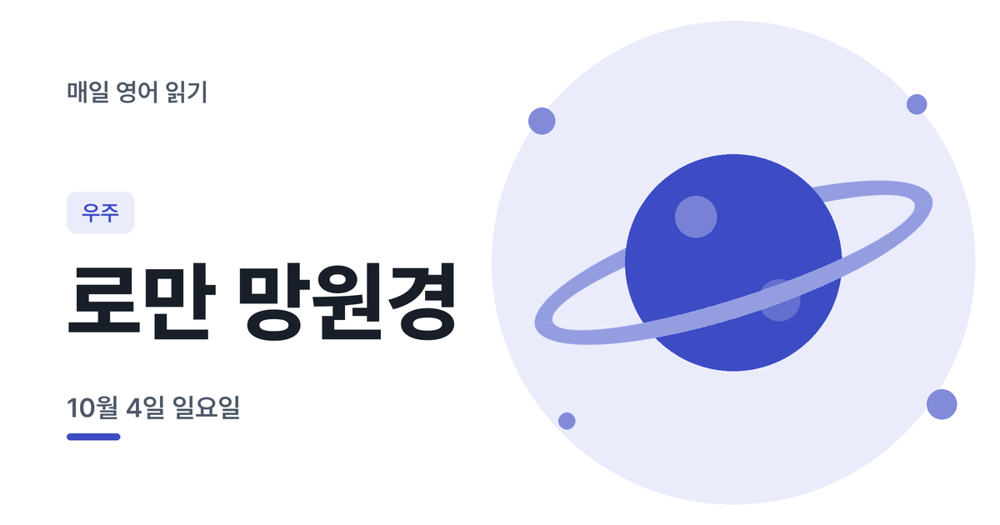

오늘은 로만 망원경 이야기예요
매일 아침 새로 올라오는 B1~B2 영어 읽기예요. 듣고, 해석하고, AI에게 피드백을 받아 보세요. 메일로 받기다른 언어
오늘의 지문
문장 번호를 누르면 그 문장만 들려요. 해석은 먼저 읽어 본 다음에 켜 보세요.
출처: NASA's Roman Space Telescope Wide Field Instrument Has Been Activated (ScienceDaily, 2026-09-21)
지문, 내 해석, 피드백 요청이 함께 복사돼요. ChatGPT나 Claude 같은 AI 채팅에 붙여넣으면 문장별로 고쳐 줘요.
주요 단어
오늘의 체크 포인트
5번 문장은 핵심 정보가 끝에 몰려 있어요. roughly one and a half million kilometres(약 150만 킬로미터)와 in early 2027 — 거리와 시점을 문장 끝에서 놓치지 말고 확인하세요.
2번의 300-megapixel은 3억(300,000,000) 화소예요. 4번의 one hundred times more area는 '100배 더 넓은 면적'이라는 뜻입니다.
먼저 해석해보세요
모르는 단어가 나와도 문장을 버리지 말고, 아는 부분만이라도 지문 아래 '내 해석' 칸에 적어 보세요. 다 쓰면 'AI 피드백 요청문 복사'를 눌러 평소 쓰는 AI 채팅(ChatGPT, Claude 등)에 붙여넣으세요. 어디를 잘 읽었고 어디를 놓쳤는지 문장별로 알려 줘요.
한 단계 위 어휘선택 사항, 눈에 익혀두는 용도예요
매일 아침 영어 지문 받기
새 영어 지문이 올라오면 아침에 메일로 보내 드려요.
지금은 이메일 주소 하나로 한 언어만 구독할 수 있어요. 두 언어를 받으려면 서로 다른 이메일로 구독해 주세요.
구독하면 영문 확인 메일(Confirm your subscription)이 가요. 메일 속 버튼을 눌러야 구독이 끝나요. 메일이 안 보이면 스팸함도 확인해 주세요.
이메일은 뉴스레터 발송에만 쓰이고, 언제든 메일 하단에서 수신거부할 수 있어요.